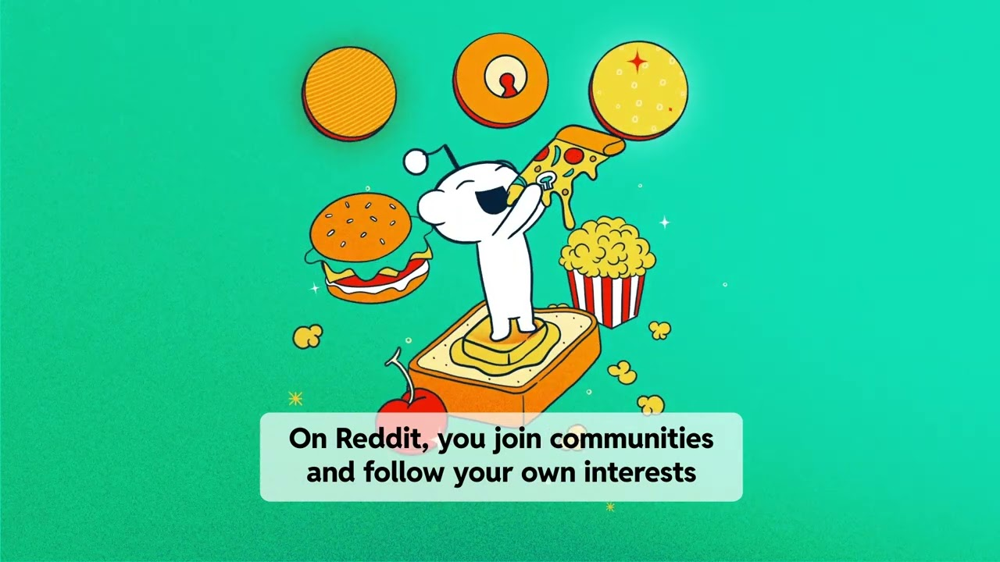
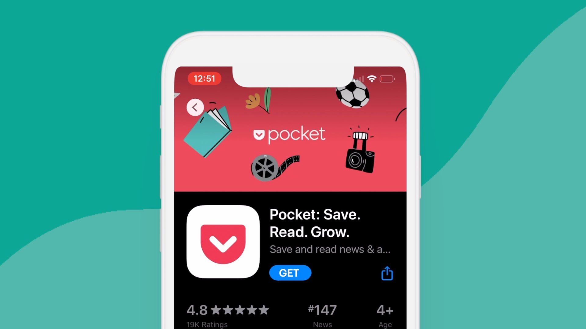
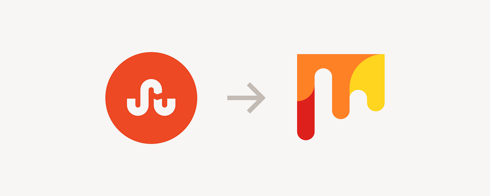

Platforma
PINTEREST
The best part of Pinterest is discovering new things and ideas from people around the world. So our moto is "See it, make it, try it, do it!"

Platforma
REDDIT
A vast network of communities where users can dive into their interests, hobbies, and passions, connecting with like-minded people through discussions, upvotes, and downvotes.
Slogan: "The Front Page of the Internet."

Platforma
POCKET
Pocket: A versatile app that lets you save articles, videos, and web pages to view later, helping you keep track of interesting content from across the web, even offline.
Slogan: "When you find something you want to view later, put it in Pocket."

Platforma
STUMBLE UPON (MIX)
An innovative content discovery platform that allowed users to find and explore unique and interesting web pages based on their interests through a simple, randomized browsing experience.
Slogan: "Explore the Best of the Web."
Pinterest
Social bookmarking mreža
Reddit
Social bookmarking mreža
Pocket
Social bookmarking mreža
StumbleUpon - MIX
Social bookmarking mreža